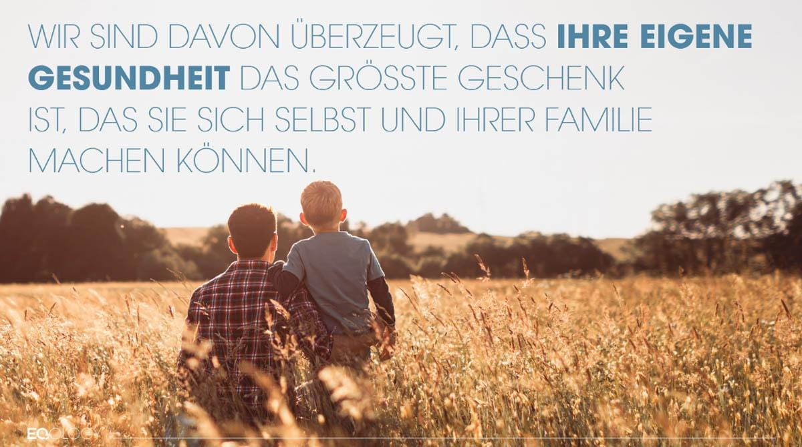
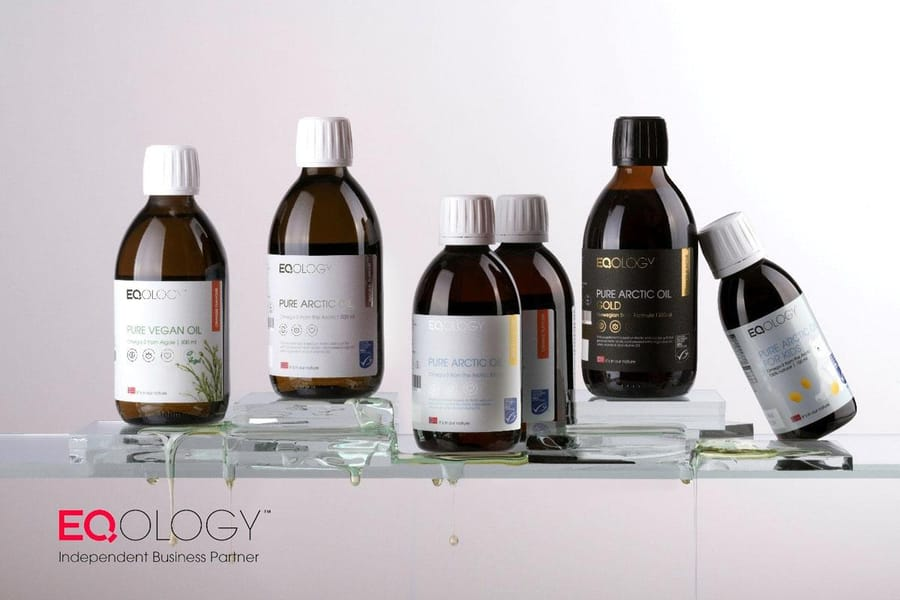
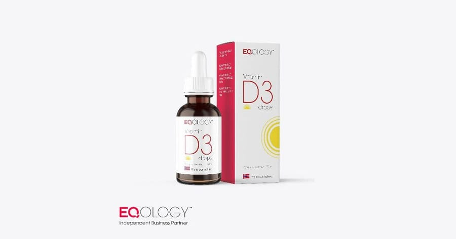
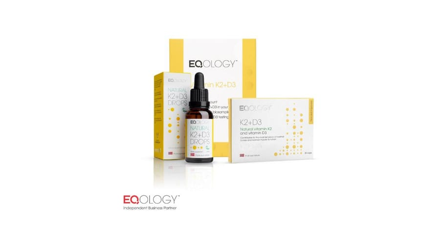
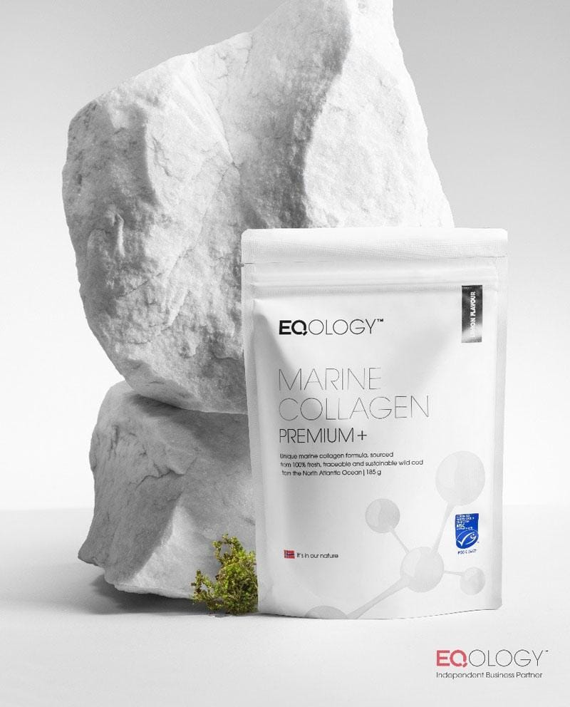
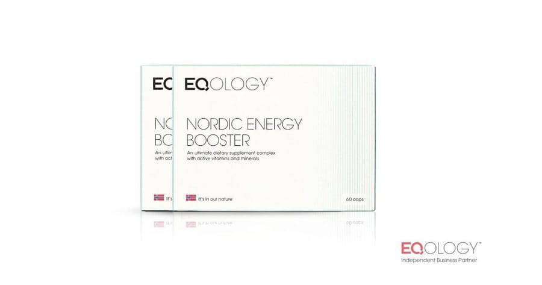

Gesundheit mit optimaler Nährstoffversorgung
Wohlbefinden entsteht von innen. Mit Eqology setze ich auf die richtigen Nährstoffe als Basis für Energie, Ausgeglichenheit und Lebensfreude.

Gesundheit mit den richtigen Nährstoffen
Ich habe mir als Heilmasseurin die gleichen Fragen gestellt und lange nach einem Gesundheitskonzept gesucht, das mich überzeugt. Mit Eqology setze ich auf eine optimale Versorgung mit den richtigen Nährstoffen – die Basis für Energie, Wohlbefinden und Lebensfreude.

Omega 3 Öl
Essenzielle Fettsäuren für Gehirn, Herz, Muskeln & Haut.

Vitamin D3
Das „Sonnenvitamin“ für Knochen, Immunsystem & Herz.

Vitamin K2
Bringt Kalzium in die Knochen – gemeinsam mit D3.

Collagen
Für Haut, Gelenke, Faszien & Bindegewebe.

Nordic Energy Booster
Mineralstoff- & Vitaminkomplex für Energie & Abwehr.
Wussten Sie, dass bei 9 von 10 Menschen ein Mangel an Omega-3 vorliegt?
Die Nährstoffe und ihre Wirkung
Warum jeder einzelne Baustein wichtig ist – und wie sie zusammenwirken.
Omega 3 Öl
Fettsäuren sind essenziell, damit alle Körperfunktionen optimal arbeiten – Gehirn, Muskeln, Kreislauf, Atmung und Haut. Heute konsumieren wir mehr verarbeitete Lebensmittel, die das Gleichgewicht zwischen Omega-3 und Omega-6 durcheinanderbringen. Eine höhere Einnahme von Omega-3 verbessert dieses Verhältnis und hilft, chronischen Krankheiten vorzubeugen. Wenn das Gleichgewicht im Körper stimmt, werden auch andere lebensnotwendige Vitamine und Nährstoffe besser aufgenommen.
Vitamin D3
Versorgt den Körper mit Energie und Heilkraft und beeinflusst Knochenmineralisierung, Immunsystem, Herz-Kreislauf-System, Gehirn und Nerven. Vitamin D3 regt das Immunsystem an, schützt vor Infektionen, senkt den Blutdruck, verbessert die Herzmuskelleistung und unterstützt Knochen und Muskulatur.
Vitamin K2
K2 wirkt zusammen mit den Vitaminen C, B und D3 und unterstützt die Steuerung der Blutgerinnung, den Knochenstoffwechsel (und Zähne) sowie die Blutgefäße. Es schützt vor freien Radikalen und Entzündungen und hilft D3 dabei, Calcium wieder in die Knochen einzubauen und aus den Arterien zu entfernen. Der Bedarf steigt mit dem Alter.
Collagen
Collagen ist ein körpereigenes Protein, das dafür sorgt, dass unser Körper innen wie außen leistungsstark, elastisch und gut strukturiert ist – vor allem in Bindegewebe, Faszien, Haut, Knochen, Knorpel und Gefäßen. Mit jedem Lebensjahr wird der Collagenhaushalt kleiner. Studien zeigen: 95 % des oral eingenommenen Collagens sind innerhalb von 12 Stunden im Gewebe verteilt und regen die Knorpelzellen zu vermehrter Produktion an.
Nordic Energy Booster
Der ultimative Nahrungsergänzungs-Komplex mit aktiven Mineralstoffen und Vitaminen trägt zum Erhalt des Energiespiegels bei, unterstützt das Immunsystem, fördert eine normale Muskelfunktion und beugt Müdigkeit sowie Erschöpfung vor. Die perfekte Ergänzung zu Pure Arctic Oil und Vitamin K2+D3 – mit Vitamin C, Zink, Magnesium und B-Vitaminen.
Omega-3 – drei Varianten
Die fortschrittliche Formel unterstützt Hirn- und Augengesundheit und beinhaltet zusätzlich Lutein und Vitamin A, um altersbedingten Erscheinungen vorzubeugen.
Speziell für Kinder entwickelt – unterstützt die Entwicklung von Gehirn, Augen und Immunsystem, zusätzlich mit Vitamin D angereichert.
Eine pflanzliche Omega-3-Lösung aus Mikroalgen mit DHA und EPA – angereichert mit Vitamin D3 und Lutein für Knochen, Immunsystem und Augen.
Mit einem Omega-3-Bluttest von Eqology überprüfen Sie Ihre Omega-3- und Omega-6-Werte und erhalten wertvolle Einblicke in Ihre Gesundheit – die Basis für fundierte Entscheidungen und ein ausgewogenes Fettsäureverhältnis.
Bereit für deine Auszeit?
Vereinbare jetzt deinen persönlichen Termin in der Energie-Quelle – ich freue mich darauf, dir neue Kraft zu schenken.